# A tibble: 3 × 3
dataset x y
<chr> <dbl> <dbl>
1 dino 55.4 97.2
2 dino 51.5 96.0
3 dino 46.2 94.5Module 3: Data visualization II
PUBHLT0411: Statistical Packages for Public Health Data Analysis
Rebecca Deek, PhD
University of Pittsburgh, Biostatistics and Health Data Science
Why visualize?
- Summarizing data is fundamental to statistics.
- Numeric summaries (mean, variance, correlation, etc.) are common and informative.
- Pairing numeric summaries with data visualizations provides deeper insights, some that may be missed by numerical analysis alone.
Why visualize: 13 data sets
# A tibble: 13 × 6
dataset mean.x mean.y sd.x sd.y corr
<chr> <dbl> <dbl> <dbl> <dbl> <dbl>
1 dino 54.3 47.8 16.8 26.9 -0.06
2 away 54.3 47.8 16.8 26.9 -0.06
3 h_lines 54.3 47.8 16.8 26.9 -0.06
4 v_lines 54.3 47.8 16.8 26.9 -0.07
5 x_shape 54.3 47.8 16.8 26.9 -0.07
6 star 54.3 47.8 16.8 26.9 -0.06
7 high_lines 54.3 47.8 16.8 26.9 -0.07
8 dots 54.3 47.8 16.8 26.9 -0.06
9 circle 54.3 47.8 16.8 26.9 -0.07
10 bullseye 54.3 47.8 16.8 26.9 -0.07
11 slant_up 54.3 47.8 16.8 26.9 -0.07
12 slant_down 54.3 47.8 16.8 26.9 -0.07
13 wide_lines 54.3 47.8 16.8 26.9 -0.07Why visualize: 13 data sets
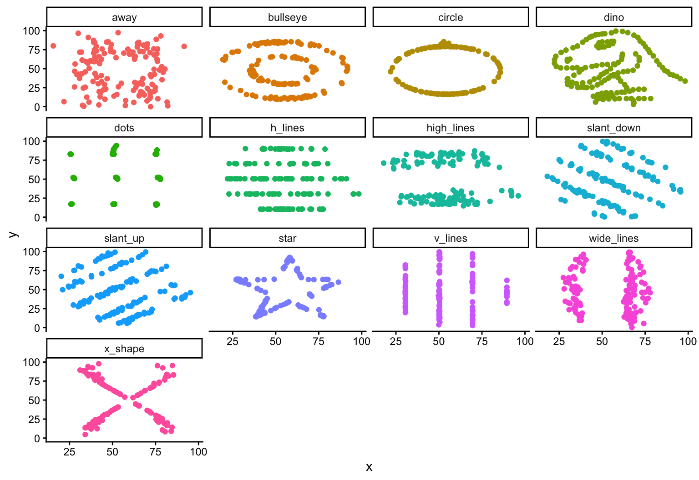
Visualize in multiple ways
# A tibble: 2,484 × 5
left lines normal right split
<dbl> <dbl> <dbl> <dbl> <dbl>
1 -9.77 -9.77 -9.76 -9.76 -9.77
2 -9.76 -9.74 -9.72 -9.05 -9.77
3 -9.75 -9.77 -9.68 -8.51 -9.77
4 -9.77 -9.77 -9.64 -8.24 -9.77
5 -9.76 -9.77 -9.6 -8.82 -9.77
6 -9.77 -9.76 -9.56 -8.07 -9.76
7 -9.76 -9.76 -9.52 -7.06 -9.75
8 -9.76 -9.76 -9.48 -8.67 -9.76
9 -9.77 -9.77 -9.44 -8.44 -9.77
10 -9.77 -9.77 -9.4 -6.79 -9.77
# ℹ 2,474 more rows# A tibble: 5 × 4
Plot Q1 median Q3
<chr> <dbl> <dbl> <dbl>
1 left -2.69 -0.01 2.67
2 lines -2.69 -0.01 2.67
3 normal -2.68 0 2.68
4 right -2.68 0 2.68
5 split -2.69 0 2.68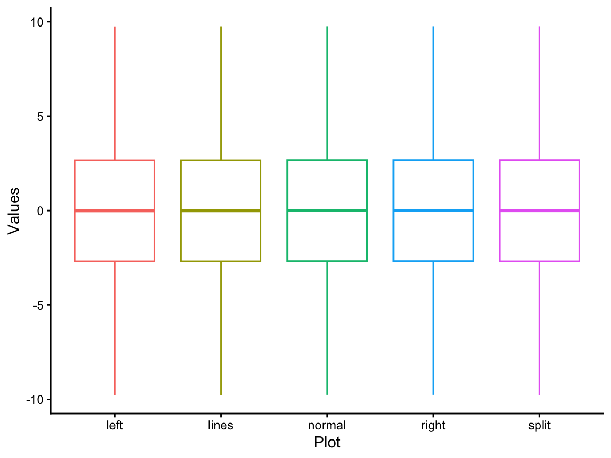
Visualize in multiple ways
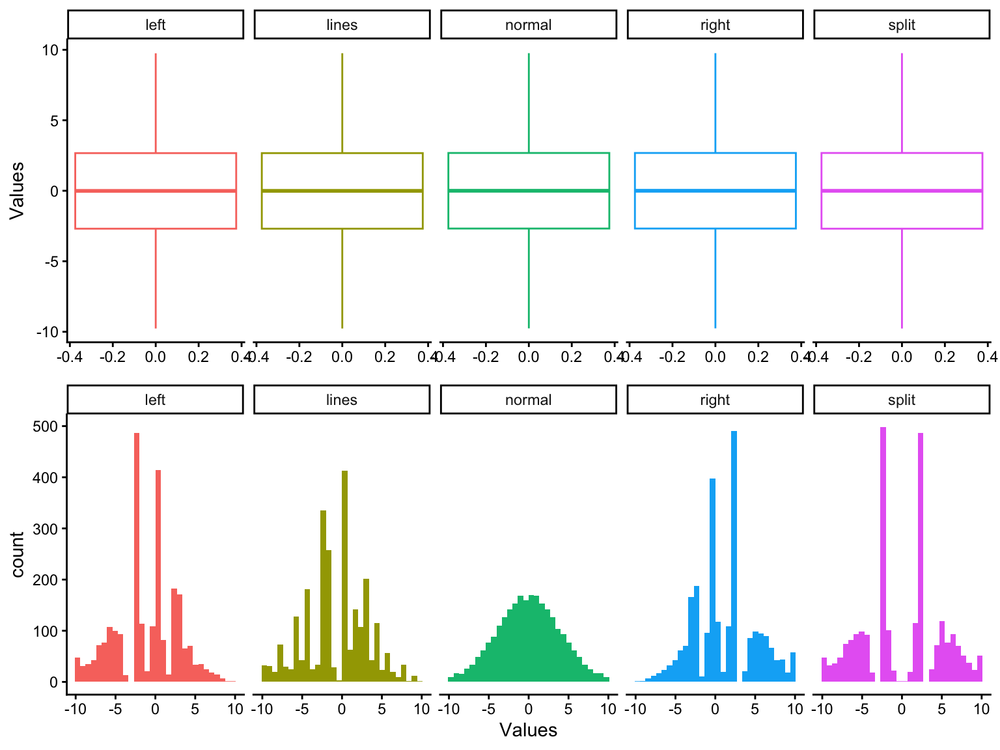
geom_violin
Violin plots
- Hybrid between a boxplot and density plot.
- Displays the distribution and probability density of the data.
- Mirrored and rotated density plot.
- “Width” of the violin represents fequency of the data points in a given area.
- Wider sections indicate higher density.
Violin vs. density plots
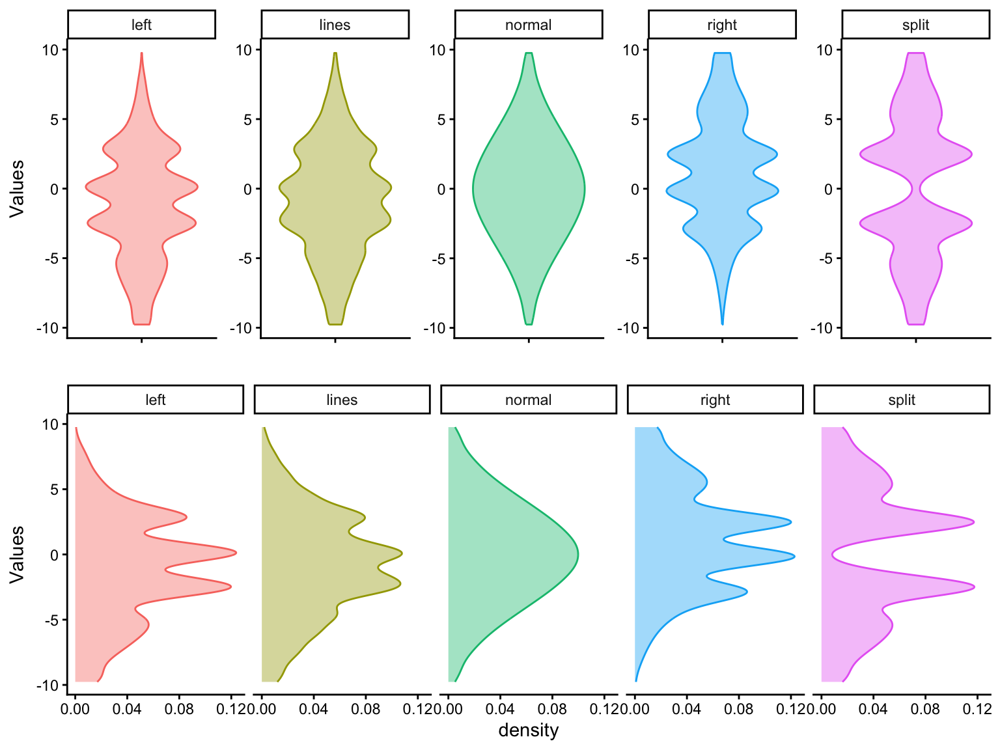
Visualize with mappings
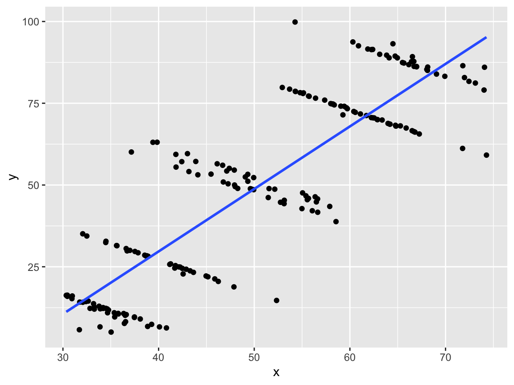
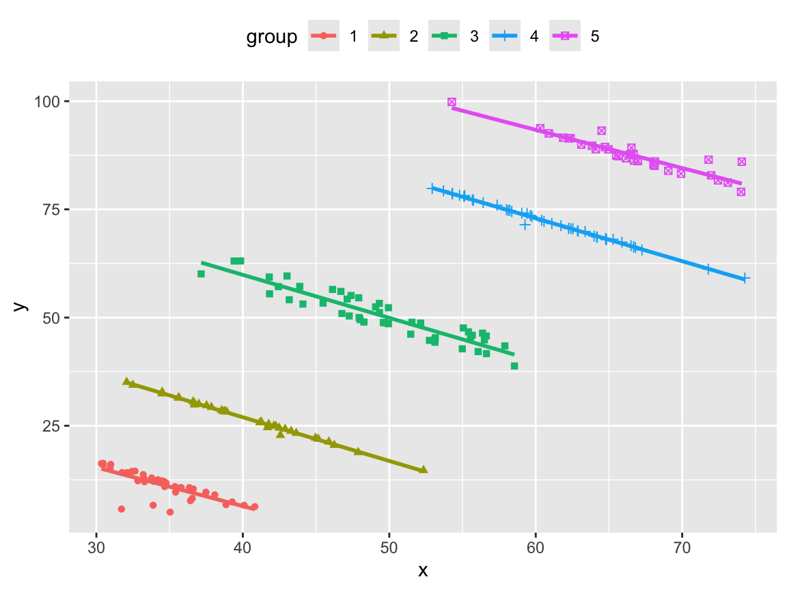
- The overall trend line is positive, but when a third variable is added to the plot via
aes()it is clear that within each group the trend line is negative.
Layering geoms
- Geoms can show similar or complementary information about the data.
- Can combine some
geoms_*()into a single plot.
- Can combine some
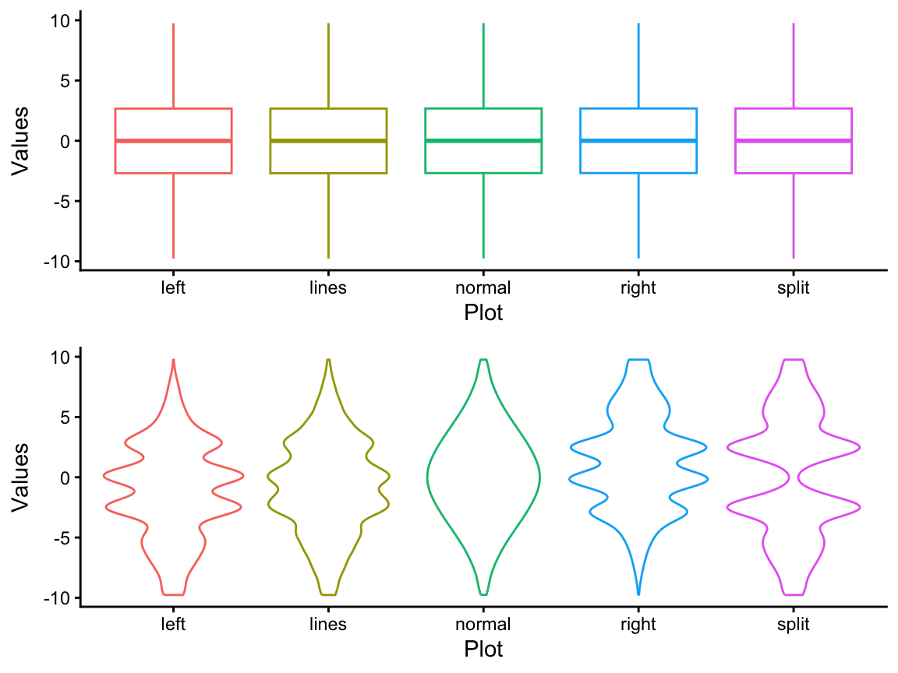
Layering geoms: Scatterplot example
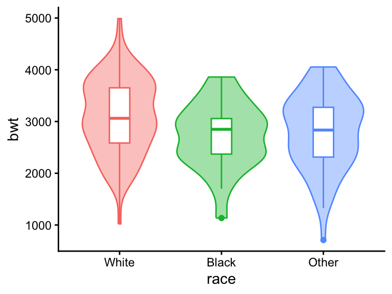
Layering geoms: Scatterplot example
Layering geoms: Order matters
Group
- In the birthweight scatterplot,
geom_smooth()plotted a geometric object (lowess line) per smoking group.- This is a collective geom (versus
geom_point()which is an individual geom). - Automatically defined groups based off of the
colormapping.
- This is a collective geom (versus
- Alternatively, when no other discrete variable is mapped to an aesthetic, groups can be created with
group.- Does not create a legend or distinguishing aesthetics.
Groups: Longitudinal data and lines
- Goldstein (1987) investigated growth patterns of a set of boys in Oxford, England. Information on standardized age and height were collected repeatedly for each boy.
- This study design is known as longitudinal or repeated measures data.
- We are interested in visualizing the trend (growth trajectory) between age and height for each boy.
- These types of plots are called spaghetti plots.
Groups: Longitudinal data and lines
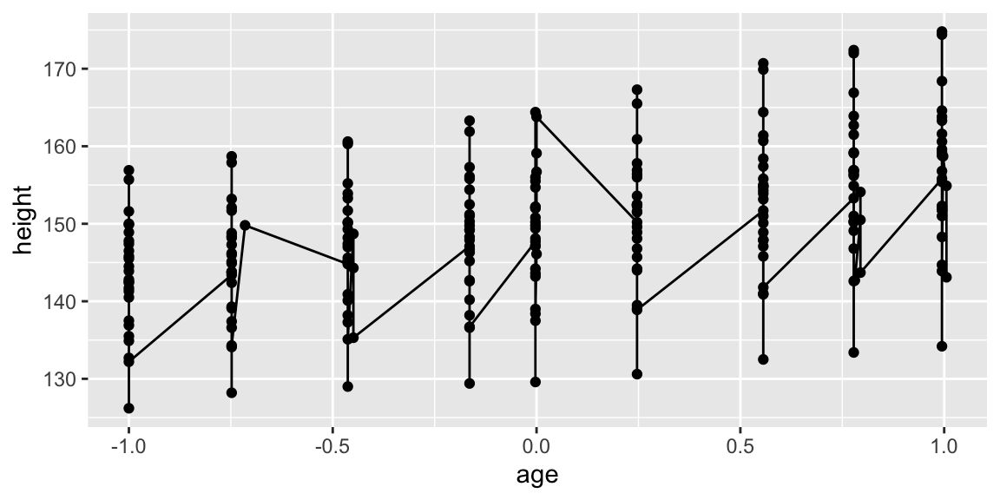
Not quite what we are looking for. ggplot is trying to connect all points with a single line, but we would like one line per boy.
Exercise: Groups
Suppose we would like to keep the trajectory lines per boy but add an overall trend line using data from all boys in red. Modify the code below to do so. How you would change this code to produce a trend line per boy?
ggplot2::ggplot(Oxboys, aes()) +
ggplot2::geom_line(aes()) +
ggplot2::geom_smooth(, se = F)
Statistical transformations
Some geoms apply statistical transformations to the supplied data prior to plotting. E.g.,
geom_boxplotcalculates a five-number summary.geom_barcounts the number of observations per group.geom_smoothfits a regression model and plots its predictions.
Every geom has a default (implicit) stat. Even those that don’t perform transformations (stat = identity).

Implicit statistical transformations
stat = "count"is the deafult forgeom_bar.
# A tibble: 6 × 3
# Groups: smoke, race [6]
smoke race n
<fct> <fct> <int>
1 Nonsmoker White 44
2 Nonsmoker Black 16
3 Nonsmoker Other 55
4 Smoker White 52
5 Smoker Black 10
6 Smoker Other 12Aesthetics of stat transformations
Facets
- Generates multiple small plots each showing different subsets of the data.
- Helps compare variables based on a conditioning variable.
- E.g., the relationship between age and birthweight given smoking status and/or race.
- Conditioning variable must be categorical.
- Discretize continuous variables.
- Useful for large data sets as well.
Types of facets
There are three types of facets:
facet_null(): generates a single plot (the default).facet_wrap(): “wraps” a 1d set of panels into 2d.facet_grid(): produces a 2d grid of panels defined by two variables.- One variable for rows and one for columns.
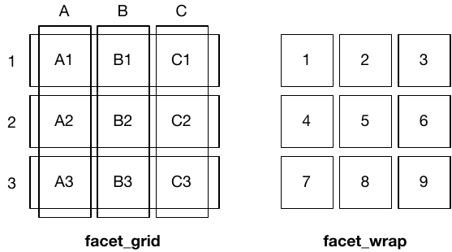
We will primary concern ourselves with facet_grid() as it can work for one or two faceting variables.
facet_grid()
- Formula syntax:
facet_grid(rowVar~columnVar)
Facets vs aesthetics
- Compare the prior faceted plot to this one using only aesthetic combinations

Facets with aesthetics
Facets with fixed layout
birthwt |>
ggplot2::ggplot(aes(x = lwt, y = bwt) ) +
# plot all points in grey and fix them across facets
ggplot2::geom_point(color = "grey", alpha = 0.5, layout = "fixed") +
# plot all points and color by smoke no fixed layout -> will be faceted
ggplot2::geom_point(aes(color = smoke)) +
ggplot2::facet_grid(smoke~race)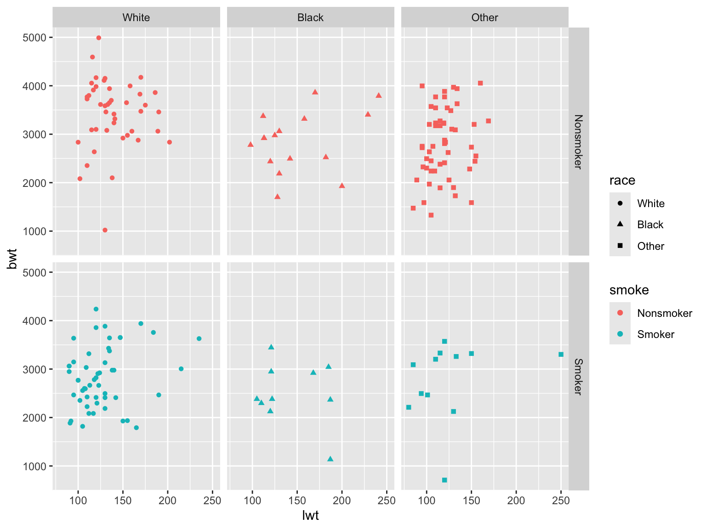
Column only facets
. ~ var produces facets down the columns. Facilitates comparison of y-axis because the vertical scales are aligned.
Row only facets
var ~ . produces facets down the rows. Facilitates comparison of x-axis because the horizontal scales are aligned.
Facet axes

::::
Facet scales
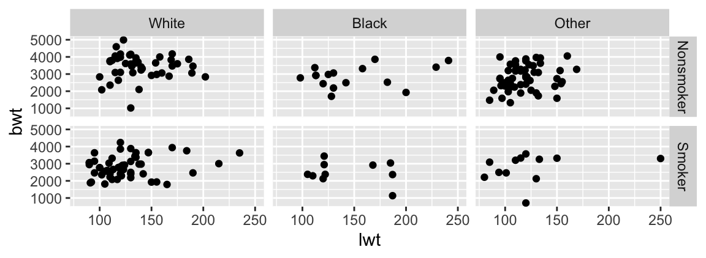
Position adjustments
Useful for bar plots and histograms:
stack: stack overlapping bars on top of each other (default).identity: does nothing to overlapping bars but requires alpha.- Helpful for overlapping histograms but not bar charts.
fill: stack overlapping bars and scale so the top is always at 1.dodge: place overlapping bars side-by-side.
Version for scatterplots when many points overlap:
position_nudge(): move points by a fixed offset.position_jitter(): add a little random noise to every position.position_jitterdodge(): dodge points within groups, then add a little random noise.
Position adjustments: Bar charts
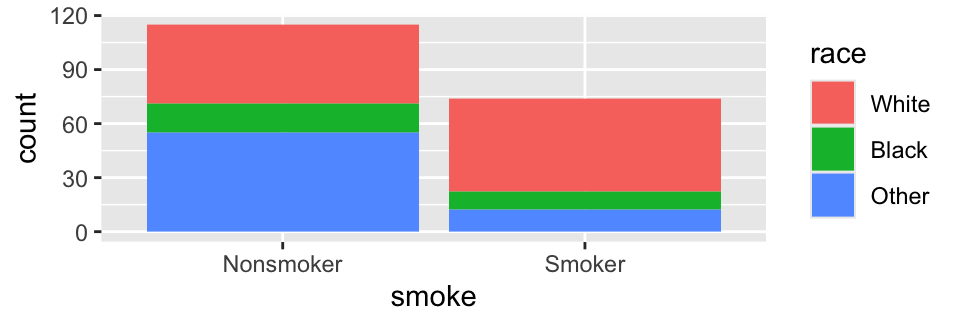
Position adjustments: Histograms
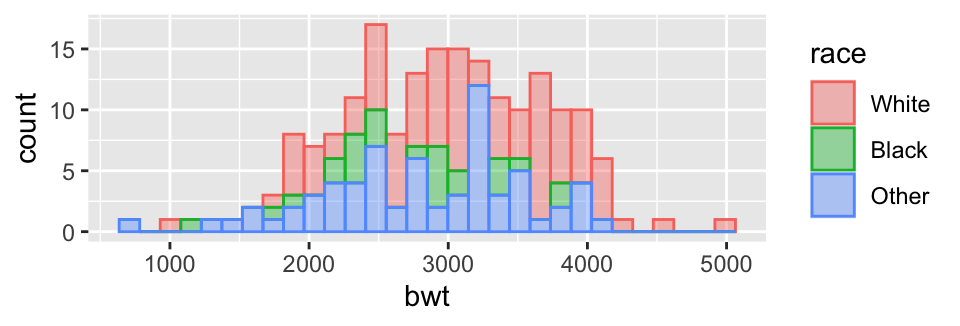
Exercise: Facets and position adjustments
Create a histrogram that compares the distribution of lwt across races. Ensure that each of the histograms is fully visible. Facet by low birthweight status such that it is easy to compare lwt between the two birthweight groups.
birthwt |>
dplyr::mutate(race = factor(x = birthwt$race,
levels = 1:3,
labels = c("White", "Black", "Other"))) |>
ggplot2::ggplot(aes()) +
ggplot2::geom_histogram(, alpha = 0.3) +
ggplot2::facet_grid()
Scales
- Scales control how the aesthetic mappings of variables manifest visually in plots.
- How a variable is translated into
color,size,shape, etc.
- How a variable is translated into
- Every aesthetic has a default scale.
Overriding default scales
ggplot2has syntax to override default scales.- General naming scheme: `scales_‘aesthetic’_‘scale’.
breaksandlabelsare the main arguments used.
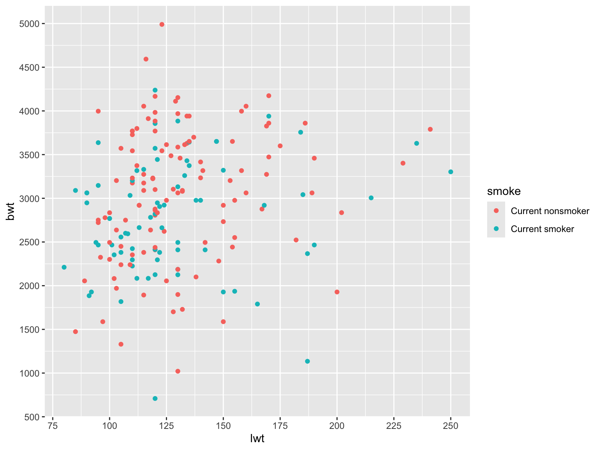
Color scales: ColorBrewer
- Discrete color scale with colors picked from ColorBrewer.
- Some colorblind friendly palettes (e.g.,
Dark2).
- Some colorblind friendly palettes (e.g.,
Color scales: Manual
- It is also possible to supply your own color palette.
ggplot2quick color reference.
Color scales: Manual + packages
- There are many packages with pre-specified color palettes that you can use.
- E.g., wesanderson, ghibli, MetBrewer, waRhol, NatParksPalettes, ggsci, and more.
- Check the paletteer package for more.
Themes
theme_*()

theme()
theme()
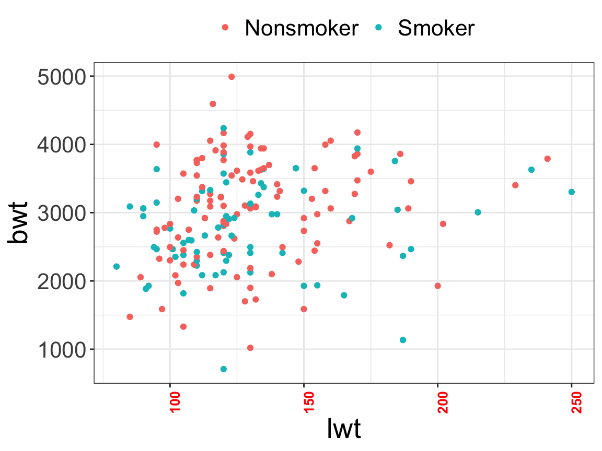
Exercise: Themes
Create a boxplot of birthweight by smoking status. Change the boxplot colors to dark blue and orange. Increase the y-axis by 500 lbs/tick mark. Make the background plain white with no grid lines. Remove the legend and bold the title.
birthwt |>
dplyr::mutate(smoke = factor(birthwt$smoke, levels = 0:1,
labels = c("Nonsmoker", "Smoker"))) |>
ggplot2::ggplot(aes(x = smoke, y = bwt, fill = smoke)) +
ggplot2::geom_boxplot() +
ggplot2::( = c("darkblue", "orange")) +
ggplot2::scale_y_continuous(name = "Birthweight (grams)",
= seq(0, 5000, = 500) ) +
ggplot2::(name = "Smoking status") +
ggplot2::labs(title = "Birth Weight by Smoking Status") +
ggplot2::() +
ggplot2::theme(legend.position = "",
plot.title = (face = "bold", hjust = 0.5) )
Patchwork: Combining plots
- We often have many related plots that we want to combine into one figure.
- Patchwork will automatically select the number of rows/columns based on the number of plots provided.
Patchwork: Combining plots
- Or the number of row and/or columns can be specified.
Patchwork: Combining plots
/vertically stacks plots.
Patchwork: Combining plots
- In patchwork
+adds plots to a row but wraps them into new rows if necessary. |adds plots side by side and will not autowrap.
Patchwork: Combining plots
(bpData.bp.datasaurus | bpData.violin.datasaurus) / bpData.hist.datasaurus +
patchwork::plot_annotation(
title = "Histograms, boxplots, and violin plots of bp data from datasauRus",
caption = "Source: https://jumpingrivers.github.io/datasauRus"
) +
patchwork::plot_layout(
heights = c(2, 1) # ratio of heights
)Saving plots
- Once you’ve made a plot, you may want to save it to share with others or to include in a paper or presentation.
- File name conventions should be used (informative and dated).
- If
plotis not specified, the most recent plot displayed is saved. - If
heightandwidtharen’t specified, the dimensions of the current plot are used.- Aspect ratios (width:height) of 2:1 or 4:3 are preferred.
- Saving to .pdf gives the highest resolution.
- Although other file types are support (.png, .jpeg).